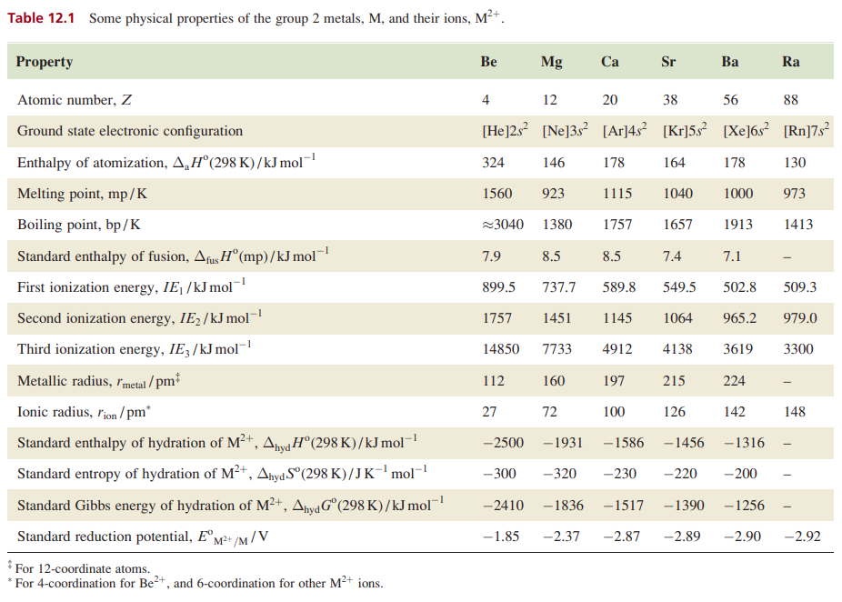

What are group 2A elements?
Group 2A elements are referred to as “ alkaline earth ” metals (tan column below). The name “ alkaline ” comes from the fact that compounds of these elements form basic (pH greater than 7) or alkaline solutions when dissolved in water. If the Group 1 elements all have one s electron in their outer orbital, we can predict that the Group 2 elements will have two electrons in that outer shell.
The beryllium atom, the first element of Group 2, has an atomic number of four. The atom has the 1 s shell filled as well as the 2s shell, giving a total of four electrons (1s22s2). Note that there are two s electrons in the outer shell, a structure that is characteristic of the Group 2 elements.
Radium (atomic number 88) has similar properties to barium and is also in the Group 2 category. However, radium is a radioactive element and is generally under the category of radioisotopes in addition to being an alkaline earth metal, because it is not a stable element.
The Group 2 elements tend to be less reactive than their Group 1 counterparts. The need to remove two electrons in order for the material to react means more energy is needed for electron removal. However, these elements are reactive enough that they do not exist in their elemental forms in nature, but are present as compounds.
General Properties
Arrows show an increasing trend
| Elements | Flame color | Atomic number | Melting Point | Ionisation energy | Chemical reactivity |
|---|---|---|---|---|---|
| Be | White | ||||
| Mg | White | (Exception) | |||
| Ca | Orange | (Exception) | |||
| Sr | Red (Brick) | ||||
| Ba | Green |
Values
Reactions with O2
NOTE: MA is a symbol of alkali earth metals or otherwise known as group 2 elements.
General reaction:
2MA + O2 → 2MAO
Example reactions:
2Mg + O2 → 2MgO
2Ca + O2 → 2CaO
2Sr + O2 → 2SrO
Reactions with H2O(l) and H2O(g)
NOTE: MA is a symbol of alkali earth metals or otherwise known as group 2 elements.
General reaction with H2O(l):
MA + 2H2O(l) → MA(OH)2 + H2
General reaction with H2O(g):
MA + H2O(g) → MAO + H2
Example reactions:
Note that Be doesn't react neither with H2O(l) or H2O(g)Mg + 2H2O → Mg(OH)2 + H2
Ca + 2H2O → Ca(OH)2 + H2
Sr + 2H2O → Sr(OH)2 + H2
Video of reactions:
Reactions with acids
NOTE: MA is a symbol of alkali earth metals or otherwise known as group 2 elements.
General reaction with HCl:
MA + 2HCl → MACl2 + H2
General reaction with H2SO4:
MA + H2SO4 → MASO4 + H2
General reaction with HNO3:
MA + 2HNO3 → MA(NO2)2 + H2
Example reaction:
Mg + 2HNO3 → Mg(NO2)2 + H2
Compounds of group 2A elements
Hover over the compounds to see their chemical and physical properties.
| Hydroxides | Carbonates | Nitrates | Sulfates |
Be(OH)2 (s)
Solubility: Insoluble |
BeCO3
Solubility: 1st most soluble |
Be(NO3)2
Solubility: Least soluble |
BeSO4
Solubility: Most Soluble |
|---|---|---|---|
|
Mg(OH)2 (s)
Solubility: Insoluble |
MgCO3
Solubility: 2nd most soluble |
Mg(NO3)2
Solubility: 2nd least soluble |
MgSO4
Solubility: Soluble |
|
Ca(OH)2 (aq)
Solubility: Slightly soluble |
CaCO3
Solubility: Low |
Ca(NO3)2
Solubility: Medium |
CaSO4
Solubility: Low |
|
Sr(OH)2 (aq)
Solubility: Low |
SrCO3
Solubility: Very Low |
Sr(NO3)2
Solubility: High |
SrSO4
Solubility: Insoluble |
|
Ba(OH)2 (aq)
Solubility: Medium |
BaCO3
Solubility: Very Low |
Ba(NO3)2
Solubility: High |
BaSO4
Solubility: Very Low |